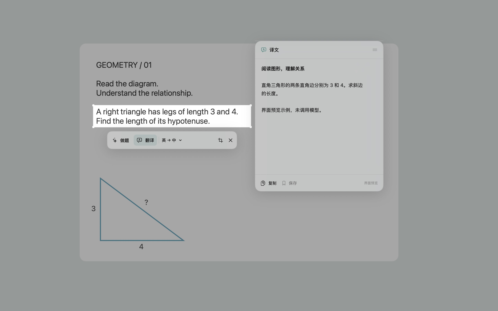

See something you don’t understand? Select it.
Read English material, review course slides, or look at text in an image. Choose “Translate” (“翻译”) and keep reading in the floating window.
Made for macOS · Free and open source
Select text or a problem. Let ChatGPT translate or explain it, with the answer right beside your selection.

Public beta v0.2.1macOS 14 or later; includes Apple silicon and Intel builds. Intel has not yet been tested on a physical Mac.
An internet connection and a ChatGPT account with the required access are needed. The installer has not yet been notarized by Apple, so macOS may block it the first time you open it. See the installation note.
Read English material, review course slides, or look at text in an image. Choose “Translate” (“翻译”) and keep reading in the floating window.
Select the problem statement and diagram together, then choose “Solve” (“做题”) and ask ChatGPT to help you understand the problem. Always check AI responses.
Use the app in Chinese or English. Expand the question box when you need a follow-up, or switch translation languages to update the answer automatically.
After installation, grant Screen Recording permission and sign in to ChatGPT.
Open the downloaded DMG, drag ScreenGPT into the Applications folder, then launch the app.
In System Settings → Privacy & Security → Screen Recording, allow ScreenGPT. After granting permission, follow the prompt to check again or restart the app.
Under “ChatGPT Account” (“ChatGPT 账号”), click “Continue with ChatGPT” and authorize in your browser. Then press ⌘ ⇧ D to start selecting an area.
The app is free and open source under the MIT License. You need your own ChatGPT account to use models. OpenAI determines plan fees, model access, and usage limits; ScreenGPT does not provide additional model credits.
No API key or Codex CLI installation is needed; sign in and authorize through your browser. Access to a selected model and plan limits depend on the access OpenAI grants to your account, workspace, and model. We can’t guarantee that every account will work.
The app sends the current selected crop to the model when you click “Translate” (“翻译”) or “Solve” (“做题”), or send a question. Follow-ups also include the conversation context for this selection. After a translation, changing either language also automatically resends that crop. The full-screen image is used only to display the screen locally and let you select an area; it is not sent as part of the request. Sign-in credentials are stored in the macOS Keychain.
Automatic saving is off by default. Any records saved manually or automatically include the screenshot and visible questions and answers and are stored locally. Read the full privacy notice.
macOS 14 or later is required. The installer includes Apple silicon and Intel builds; Intel has not yet been tested on a physical Mac. This is an early beta, and situations such as using multiple displays still need further testing.
You can report a problem or share a suggestion, or see the release notes, ZIP installer, and checksum files.